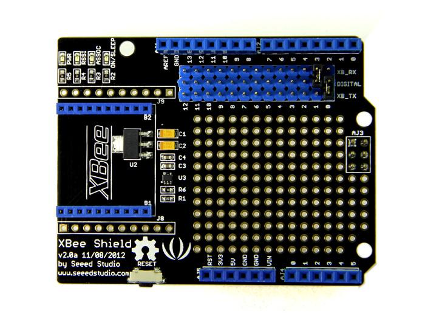
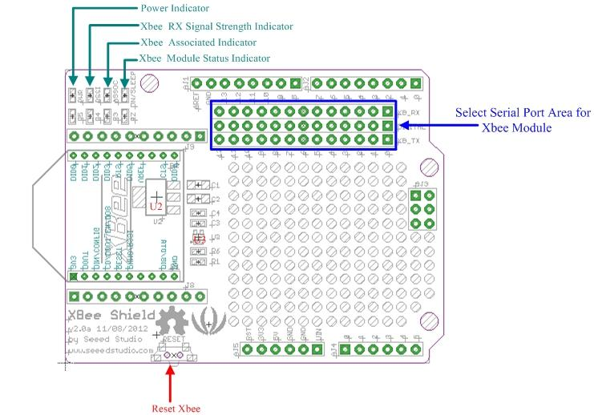
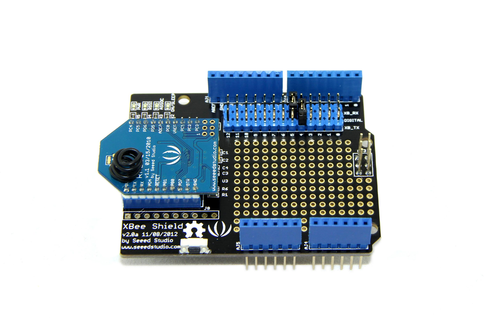
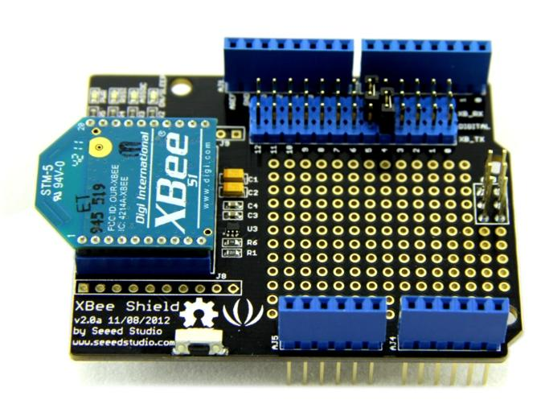

The new version of XBee Shield is a standardized and stackable shield compatible with Arduino. You can easily stack any modules from the Bee series onto it, and build a wireless network for your project. In spite of that, it is also equipped with function of level conversion, which enables a double-way conversion between high& low IO levels. The reserved digital pins facilitate users to select TX/RX port using jumper caps.
Model: SLD01103P


U2：CJT1117 IC, provides 3.3V voltage for XBee modules.
U3：SN74LVC1G125 IC, achieves Logic-level translator function.
If you want to control the XBee module by Arduino/Seeeduino, The XBee Shield is required. Here us the RF Bee as a example for wireless communication. You can also use Bluetooth Bee or other modules.
The steps are listed below:
1. Plug XBee Module onto XBee Shield.

2. Plug XBee Shield onto Arduino/Seeeduino, connect your Arduino/Seeeduino to the computer via a USB cable to turn it on.
3. Use a jumper cap to connect XB_TX and Digital 4. Also, Use a jumper cap to connect XB_RX and Digital 5. Of course you can change the digital port as you like. But don't forget to change the port number in the definition of the demo code at the same time.
Note：The followings are its known limitations:
If you need further information about how to communicate, please refer to WIKI pages of relevant modules.
XBee Shield V2.0 Eagle File
XBee Shield V2.0b Schematics File
CJT1117 Datasheet
SN74LVC1G125 Datasheet